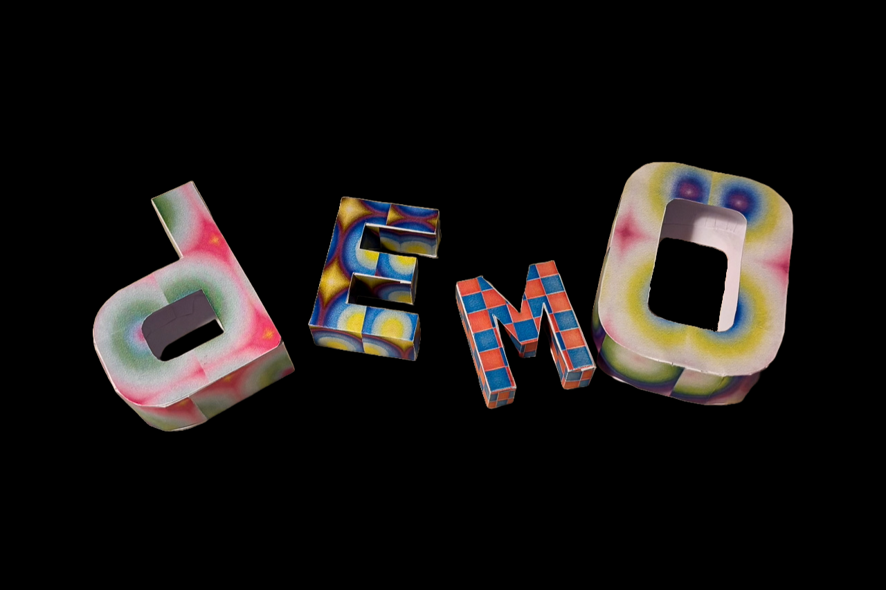
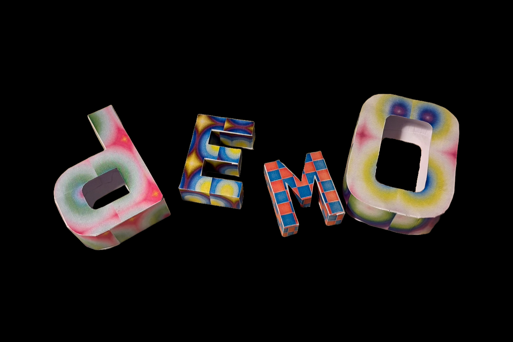
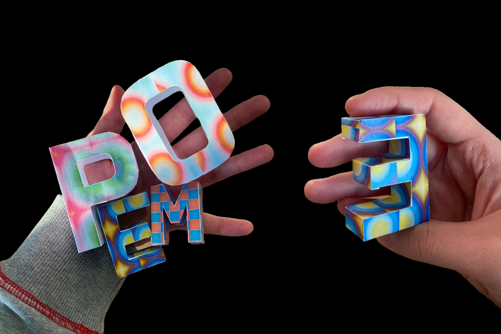
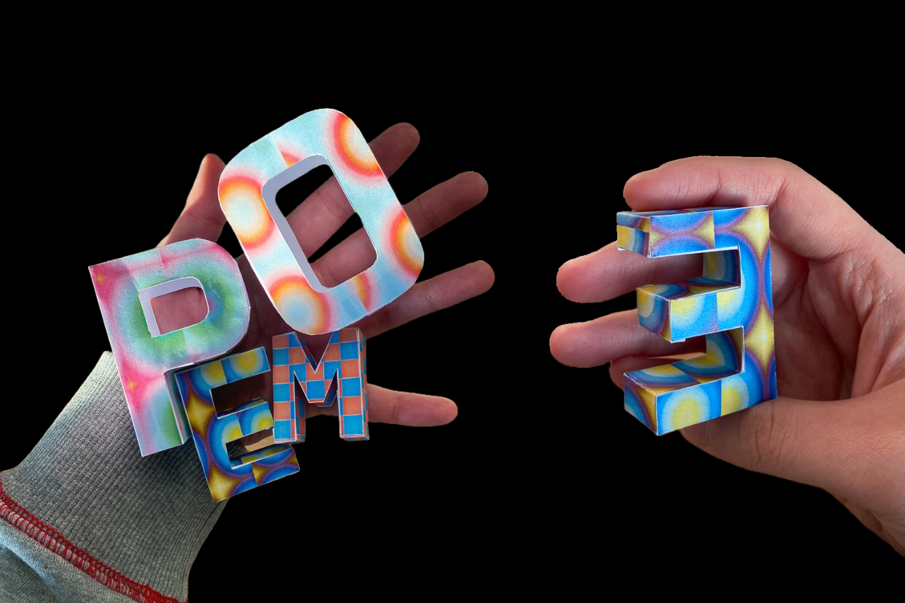

Yewon Jang°
Tool Designer
×
TypoFold
2024
A design tool that converts 3D typography into paper craft.
TypoFold is a design tool that transforms script-based 2D graphics into physical 3D typography through paper craft. The system generates real-time textures using p5.js and GLSL, which are then mapped onto 3D typographic forms. These forms can be converted into printable paper-craft patterns, allowing digital creations to exist in physical space.
TypoFold reimagines computational design by combining code-driven graphics with physical paper craft. Through custom GLSL shaders and unfolding tools, it bridges digital creativity and tangible typography, opening new possibilities in design and personal expression.
TypoFold is a design tool that transforms script-based 2D graphics into physical 3D typography through paper craft. The system generates real-time textures using p5.js and GLSL, which are then mapped onto 3D typographic forms. These forms can be converted into printable paper-craft patterns, allowing digital creations to exist in physical space.
Key Features:
・ 3D typography with automated UV mapping
・ Conversion of 3D models into printable paper patterns
・ Built-in GLSL shader editor with real-time compilation
・ Customizable pattern size with scaling controls
・ 3D typography with automated UV mapping
・ Conversion of 3D models into printable paper patterns
・ Built-in GLSL shader editor with real-time compilation
・ Customizable pattern size with scaling controls
TypoFold reimagines computational design by combining code-driven graphics with physical paper craft. Through custom GLSL shaders and unfolding tools, it bridges digital creativity and tangible typography, opening new possibilities in design and personal expression.
Website
typefold.vercel.app ↖︎
Role
Personal Project
Skills
Javascript/three.js/GLSL/react
 



 
